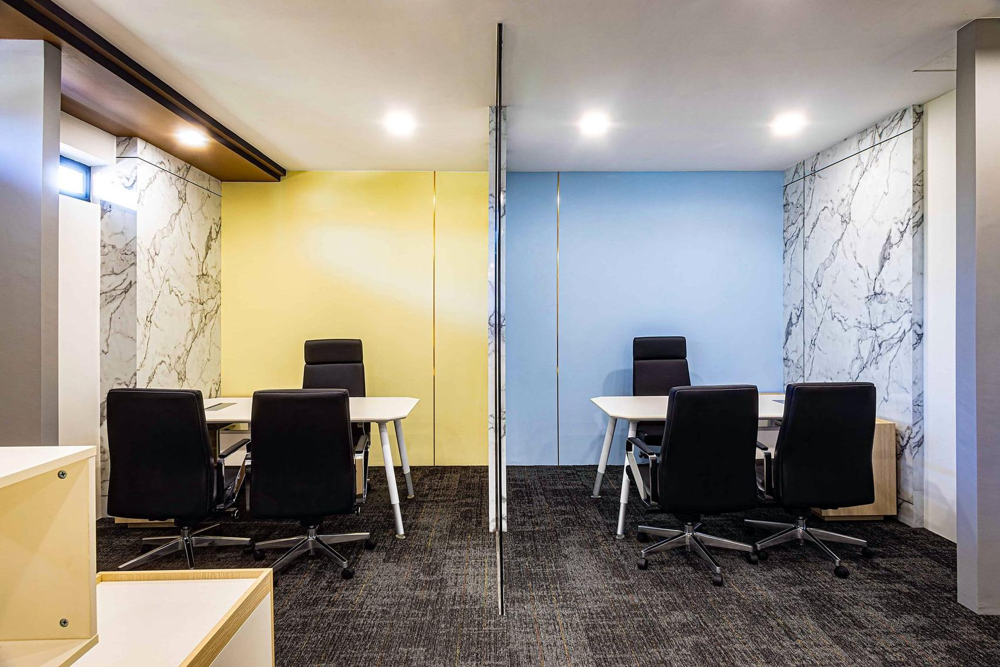

01
Digital Project Management
Better Information. Better Decisions.
We are developing and strengthening digital project management tools to improve visibility across programme, cost, procurement and site progress.
Clearer information enables earlier intervention, faster decisions and stronger accountability.